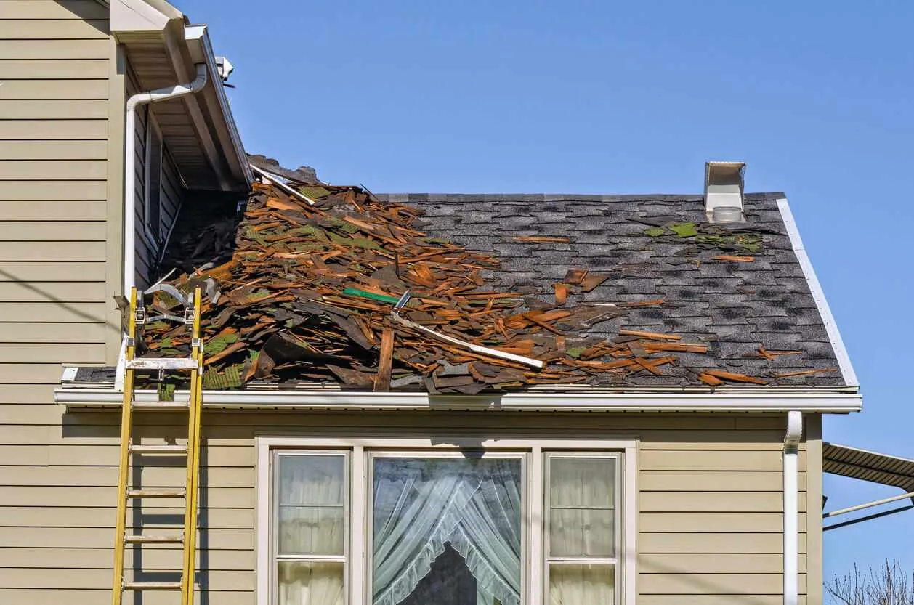

You take pride in your home and love having the ability to make it all your own. You’ve painted the walls, trimmed the hedges, and enhanced the curb appeal. You take time to mow the lawn and put up festive decorations throughout the seasons. But if regular roof maintenance isn’t part of your routine, you may be in for a big surprise down the road.
Neglecting roof maintenance can lead to costly roof repairs and even cut years off of the life of your roof. Installing a new roof can cost thousands of dollars and the approval of your HOA; Or you might be thinking you are in an apartment or condo with no HOA, but there are still problems and costs you have to deal with if your roof isn’t maintained. If you’re like most Utah homeowners, you want to do everything you can to prolong the life of your existing roof.
Utah offers a wide range of weather and each season brings unique challenges to your roof. Make sure your roof stays in good shape for years to come by following our seasonal roof maintenance checklist. Learning how to perform roof maintenance doesn’t have to be difficult. We’ll break down what to look for during a roof inspection and share expert tips on how to maintain shingles.
Spring Roof Maintenance Checklist
Springtime is one of the best seasons to clear out the dust bunnies and take a load of belongings to a local charity. It’s also an important time to take care of your roof. As the rain falls and the snow melts, there are many reasons to inspect and thoroughly clean your rooftop. Here are some tips on maintaining your roof in the spring:
1. Clean Out Gutters
No matter where you live, leaves, dirt, and other debris are sure to build up in your gutters throughout the winter months. Clear out your gutters using a gutter scoop or your hands, which will allow water to flow away easily from the house during the next rainfall.
2. Inspect and Replace Shingles
Shingles can fall off or become worn out during snowstorms or strong winds in the winter. Make sure your shingles are in good shape by inspecting your roof for any damaged or missing shingles. If you notice any problems, be sure to replace shingles as soon as possible.
3. Look for Mold or Algae Growth
Winter is a prime time for mold or algae to grow on your roof thanks to the moisture from rain and melting snow. Since mold and algae can cause roof leaks and other deterioration problems, it’s important to treat them as soon as you see them. Consult a professional if your roof has mold or algae problems this spring.
Summer Roof Maintenance Checklist
Ah, summer. It’s a time for family camping trips and carefree days at the pool—but it’s also a time when the sun beats down on your roof, which can cause damage. Here’s how to keep your roof in good shape during the summer season:
1. Inspect for Small Holes or Dents
Tiny holes or dents in your roof may not seem like a big deal, but they can be an entry point for small critters looking for a cool spot to spend their time in the summer. Make sure you block or patch any areas where creatures might be able to enter.
2. Check Skylights for Damage
Skylights are a great way to let the summer sun pour into your home, but they are also a source of many common roof problems. Make sure your skylights are properly sealed so you don’t have roof leaks during a summer storm, and check for clutter behind skylights.
3. Make Sure the Attic Is Properly Ventilated
Warm summer temperatures provide optimal conditions for mold to grow and damage structural beams holding up your roof. To avoid these problems, make sure your attic is properly ventilated, allowing heat to escape and cooler air to come in. For a natural way to get cold air flow, consider the benefits of a ridge vent.
Fall Roof Maintenance Checklist
Now the leaves are turning spectacular shades of orange and yellow—and they’re falling all over your roof. As the weather turns cooler, it’s an especially important time to prepare your roof for the snow and ice of winter. Check out these fall roof maintenance tips:
1. Trim Nearby Trees
Though it’s always a good idea to keep your trees trimmed, fall is a crucial season for cutting back overgrown tree branches. Doing this will reduce the time you need to spend cleaning out gutters and keep your roof protected from punctures caused by falling branches.
2. Examine Chimney and Flashing
You’re probably starting to put the fireplace to use as the weather cools down, so now is a great time to make sure your chimney is in working order. While you’re up there, inspect the flashing around the chimney and on other roof areas to make sure moisture can easily flow away from the rooftop.
3. Get a Roof Inspection
Though there are many things you can do to keep your roof in good shape, you’ll want to bring in a professional to inspect the roof at least once a year. Fall is one of the most important times to inspect a roof because you want the roof to be leak-proof while winter snowpack accumulates. Make an appointment with a roof professional so you can be confident your roof is ready for even the biggest winter storms.
Winter Roof Maintenance Checklist
When winter rolls around, it’s easy to want to stay indoors and avoid chores relating to your roof. But it’s still necessary to take care of your roof during the coldest months of the year. Here are the top tips for maintaining your roof in the winter:
1. Remove Snow Right Away
Snow on the rooftop may seem harmless, but those light snowflakes can become extremely heavy as they build up over time. This can cause major roof damage or even create a hazardous ice dam, so make sure to remove snow before it hardens up.
Watch for a six-inch buildup of heavy, wet snow. Bring in a professional to do the job if you’ll need a ladder to reach the accumulated snow.

2. Remove Debris
As the winter storms rage, you’re sure to get falling branches and other debris on your rooftop—even if you’ve been vigilant about keeping your trees trimmed. Make sure to clear away debris from your roof when you spot it, especially if a snowstorm is on the way.
3. Check for Sagging
Your shingles can become extremely slippery in the winter, so this is not a good time to be walking around on the roof. However, you can stand in your front or backyard to check for visible signs of roof sagging. If you’re not sure about what you see or what to look for, call in a professional.
Maintaining Your Roof Year-Round
Follow this seasonal roof maintenance checklist and you’ll ensure your roof does its job properly and lasts as long as possible. Remember that regular roof maintenance is an important part of learning how to make shingles last longer, and it will be well worth it as you save money and avoid costly repairs over time. However, if you encounter more severe issues and need professional help, don’t hesitate to call American Roofing. We have been working on homes throughout Utah for over 60 years. Our local expertise ensures your roof is prepared for everything from the heavy snowfall in the mountains to the intense summer heat in the valleys.
About the Author: Andrew Yorgason
Free estimates
Get a straight answer about your roof.
Free roof evaluation. We'll explain what we find, and if it can be repaired, we won't sell you a replacement.